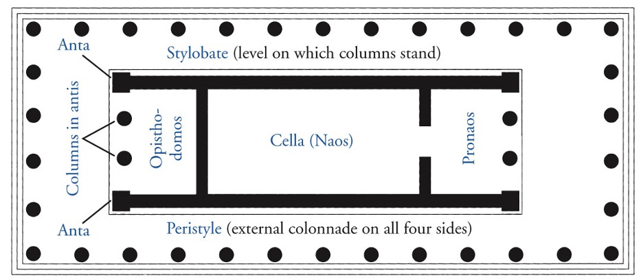
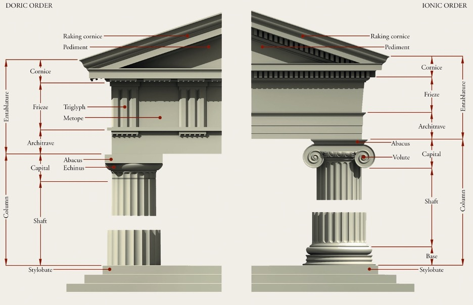

Ancient Aegean:
- Cycladic: The prehistoric art of the Aegean Islands around Delos, excluding Crete.
- Linear B: A syllabic script that was used by the Mycenaean civilization in the Bronze Age to write Mycenaean Greek. An early form of Greek writing.
- Minoan: Minoan—The prehistoric art of Crete, named after the legendary King Minos of Knossos.
- Labyrinth: Maze. The English word derives from the mazelike plan of the Minoan palace at Knossos.
- Arthur Evans: An Englishman who uncovered the palace of knossos.
- Column capital: Referred to as the ‘hat’ of a column, or the topmost section that connections with the roof. The design of the capital can help determine the type of order it hails from; Doric (oldest and simplest), Ionic (second oldest) and Corinthian (newest and used by Romans.)
- Tholos tomb: In Mycenaean architecture, a beehive-shaped tomb with a circular plan. Examples are the Atreus’ tomb.
- Relieving triangle: In Mycenaean architecture, the triangular opening above the lintel serves to lighten the weight to be carried by the lintel itself.
Ancient Greece:
- Archaic: (600–480 BCE) The first doric and ionic temples were erected, also refers to other artworks characterized in part by the use of the composite view for painted and relief fig- ures and of Egyptian stances for statues.
- Archaic Smile: The smile that appears on all Archaic Greek statues from about 570 to 480 bce. The smile is the Archaic sculptor’s way of indicating that the person portrayed is alive.
- Contrapposto: The trick to making statues appear more natural and lifelike in regards to human posture. One part is turned in opposition to another part (usually hips and legs one way, shoulders and chest another), creating a counter positioning of the body about its central axis. Sometimes called “weight shift” because the weight of the body tends to be thrown to one foot, creating tension on one side and relaxation on the other.
- The Greek Orders: Doric (oldest and simplest), Ionic (second oldest) and Corinthian (newest and used by Romans.)
- Cella: The chamber at the center of an ancient temple; in a classical temple, the room (Greek, naos) in which the cult statue usually stood.
- Peristyle: In classical architecture, a colonnade all around the cella and its porch(es). A peripteral colonnade consists of a single row of columns on all sides; a dipteral colonnade has a double row all around.
- Acropolis: Greek, “high city.” In ancient Greece, it was usually the site of the city’s most important temple(s).
- Geometric period: 900–600 BCE, came after the Cycladic and Minoan periods. It was a time of rebuilding and growth when the zig-zagging meander pattern was used and human forms were reduced to simple geometric shapes; not naturalistic like the Golden Age to follow it.
- Pericles: Rebuilt the Acropolis after the Persian sack by using the funds of the Delian League, an action which created the tension of the Peloponnesian wars.
- Stylobate: The uppermost course of the platform—basically the foundation—of a classical Greek temple, which supports the columns. Sometimes curved to make the base seem straight from afar.
- Kouros: (pl. kouroi) In Greek, it means “young man.” An Archaic Greek statue of a young man usually used as a grave maker—known to resemble Egyptian sculptures by way of his rigid posture and feet; both bearing equal weight of the body with no contrapposto.
- Polykleitos: Maker of the mathematical Canon, Polykleitos of Argos defined what constitutes a perfectly proportioned statue.
- Black figure vase: Black-figure vase painting was a style of pottery painting that originated in Corinth, Greece around 700 BCE. Figural and ornamental motifs were applied with a slip that turned black during firing, while the background was left the reddish color of the clay. It was a popular style until red-figure pottery became prevalent around 530 BCE.
- Red figure vase: Red-figure pottery is a style of ancient Greek pottery in which the background of the pottery is painted black while the figures and details are left in the natural red or orange color of the clay
- Frieze: The part of the entablature between a temple’s architrave and the cornice; also, any sculptured or painted band.
- Humanism: In the Renaissance, an emphasis on education and on expanding knowledge (especially of classical antiquity), the exploration of individual potential and a desire to excel, and a commitment to civic responsibility and moral duty. (Sound body and sound mind.)
- Hellenistic: The term given to the art and culture of the roughly three centuries between the death of Alexander the Great in 323 bce and the death of Queen Cleopatra in 30 bce, when Egypt became a Roman province. (323–30 BCE.)

